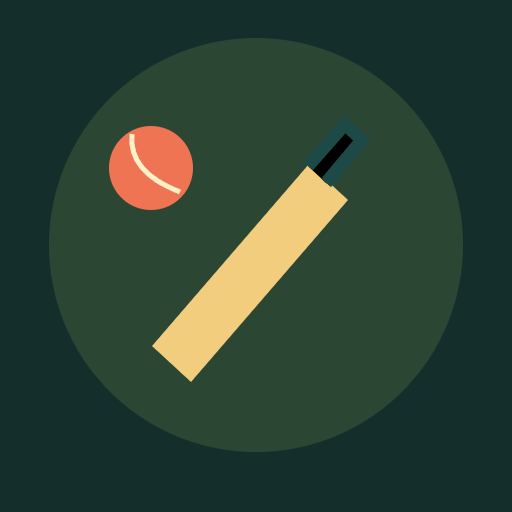

<- all projects

Gully Six
PC
Volume
Live
One lane. One over. Your moment.
The lane behind the houses is the best cricket ground in the neighbourhood, as long as nobody breaks a window. Step up to the crease, read the bowler and make the last over count. Every delivery has its own rhythm: full balls, short balls, slower balls. Choose Block, Drive or Loft and swing as the moving marker enters the green window, because a mistimed big shot can cost a wicket. Chase targets across 60 matches in six districts, plus a Daily Over. Three more modes let you bat for a personal best, hunt perfect hits or practise freely, and match coins restore your home ground.